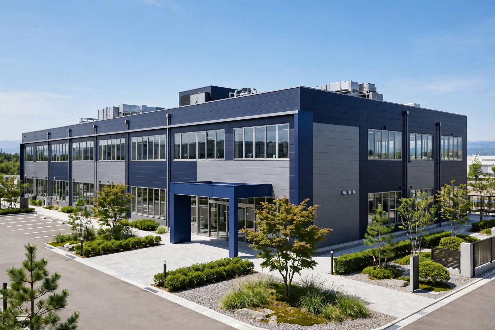

COMPANY
会社概要
MESSAGE
代表あいさつ

「断らない技術相談」が、私たちの原点です。
タカミネ精工は1985年、私の父が旋盤1台から始めた小さな町工場でした。創業以来変わらないのは、「難しい加工ほど、まず話を聞く」という姿勢です。他社で断られた形状、納期の厳しい試作、材質の分からない相談——そうした案件にこそ、私たちの技術と経験が活きると考えています。
設備は進化しても、ものづくりの中心にあるのは人の判断です。これからも八王子の地から、ミクロンの精度と誠実な対応で、お客様の開発と生産を支えてまいります。
代表取締役
高峰 健一
PROFILE
会社情報
| 会社名 | 株式会社タカミネ精工 |
|---|---|
| 所在地 | 〒192-0033 東京都八王子市高倉町12-8 |
| 代表者 | 代表取締役 高峰 健一 |
| 設立 | 1985年（昭和60年）4月 |
| 資本金 | 3,000万円 |
| 従業員数 | 38名（2026年4月現在） |
| 事業内容 | 精密部品の切削加工、試作開発支援、測定・検査受託 |
| 主要取引先 | 自動車部品メーカー、医療機器メーカー、半導体製造装置メーカー ほか |
| 取引銀行 | 多摩信用金庫 高倉支店、みずほ銀行 八王子支店 |
| 認証 | ISO 9001:2015 認証取得 |
HISTORY
沿革
1985年
八王子市にて高峰製作所として創業。汎用旋盤・フライス盤による部品加工を開始。
1992年
株式会社タカミネ精工に改組。初のNC旋盤を導入し、量産対応を開始。
2001年
現在地に本社工場を新築・移転。マシニングセンタ部門を新設。
2008年
三次元測定機を導入し、恒温検査室を設置。品質保証体制を強化。
2015年
ISO 9001認証を取得。医療機器分野への部品供給を開始。
2019年
5軸マシニングセンタを初導入。複雑形状部品の内製化を実現。
2023年
第二工場棟を増築。試作開発部門を独立させ、短納期試作体制を構築。
2026年
5軸マシニングセンタ3台目を導入。創業40周年を迎える。